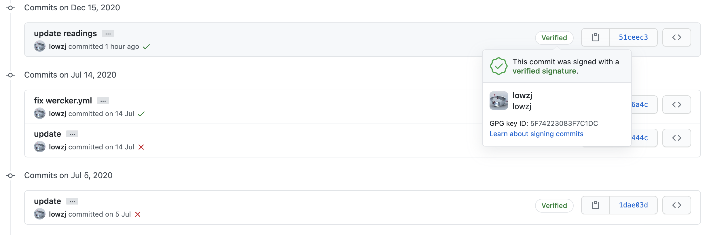

使用GPG给commits签名
效果
不说话，先上效果图

签名后在commit后有个Verified标志，点击可以展开签名信息。
操作
具体操作如下：
- Generating a new GPG key
- Adding a new GPG key to your GitHub account
- Telling Git about your signing key
- Signing commits
一定按顺序执行
生成 GPG key
- 安装 gpg
- 生成 GPG key，
- 可以一直Enter默认，按提示操作
- 最后会出现一个终端对话框，可能中文乱码，要求输入密码以及确定。密码一定要保存好。
- 列出已生成的 GPG key
- 将刚刚生成的 GPG key 的公钥拷贝到系统粘贴板，这个公钥需要填到 GitLab 或 GitHub 上。
#!/bin/bash
which gpg || brew install gpg
# generate
gpg --full-generate-key
# list
email=`gpg --list-secret-keys --keyid-format LONG | grep '^uid' | awk -F'\<|\>' '{print $(NF-1)}' | tail -n1`
echo "$email"
sec=`gpg --list-secret-keys --keyid-format LONG $email | grep '^sec' | awk -F'/' '{print $2}' | awk '{print $1}'`
echo "$sec"
gpg --armor --export $sec | pbcopy
添加到GitLab或GitHub
将上面拷贝好的公钥上传到GitHub服务器, 参考操作2文档。
配置本地Git，添加signing key
参考操作3, 生成gpg key后，需要通知git要用生成的key进行签名：
- 拿到key
- 配置git
secKey=`gpg --list-secret-keys ${UNAME} --keyid-format grep '^sec' | awk -F'/' '{print $2}' | awk '{print $1}'`
git config --global user.signingkey $secKey
如果有多个GPG key，可以在每个repo下面做局部设置
git config --local user.signingkey $secKey
其中 UNAME 就是生成 GPG key 时填的用户名，也可以使用email。
给commit签名
参考操作4，需要输入密码
git commit -S -m 'commit message'
可以设置git全局配置，默认给commit都加签名，不用每次都加 -S 选项。
git config -global commit.gpgsign true
验证commit签名
$ git verify-commit HEAD
gpg: Signature made 二 12/15 22:52:03 2020 CST
gpg: using RSA key <your_key>
gpg: Good signature from "lowzj <zj3142063@gmail.com>" [ultimate]
另外可以增加参数 -s 直接在commit message中显示添加commiter信息，即下面的 Signed-off-by。此步骤跟上面无关：https://segmentfault.com/q/1010000004044749
* commit 51ceec39cd48d368306730a5cf1b6745cc3c8fa2 (HEAD -> master, origin/master, origin/HEAD)
| Author: lowzj <zj3142063@gmail.com>
| Date: Tue Dec 15 22:52:03 2020 +0800
|
| update readings
|
| Signed-off-by: lowzj <zj3142063@gmail.com>
参考文档
- https://www.ruanyifeng.com/blog/2013/07/gpg.html
- https://stackoverflow.com/questions/39494631/gpg-failed-to-sign-the-data-fatal-failed-to-write-commit-object-git-2-10-0
- signoff: https://segmentfault.com/q/1010000004044749
FAQ
终端乱码如何解决？
将使用语言改为英文，添加到~/.bashrc 或 ~/.bash_profile 或 ~/.zshrc
export LANGUAGE=en
error: gpg failed to sign the data fatal: failed to write commit object
export GPG_TTY=$(tty)